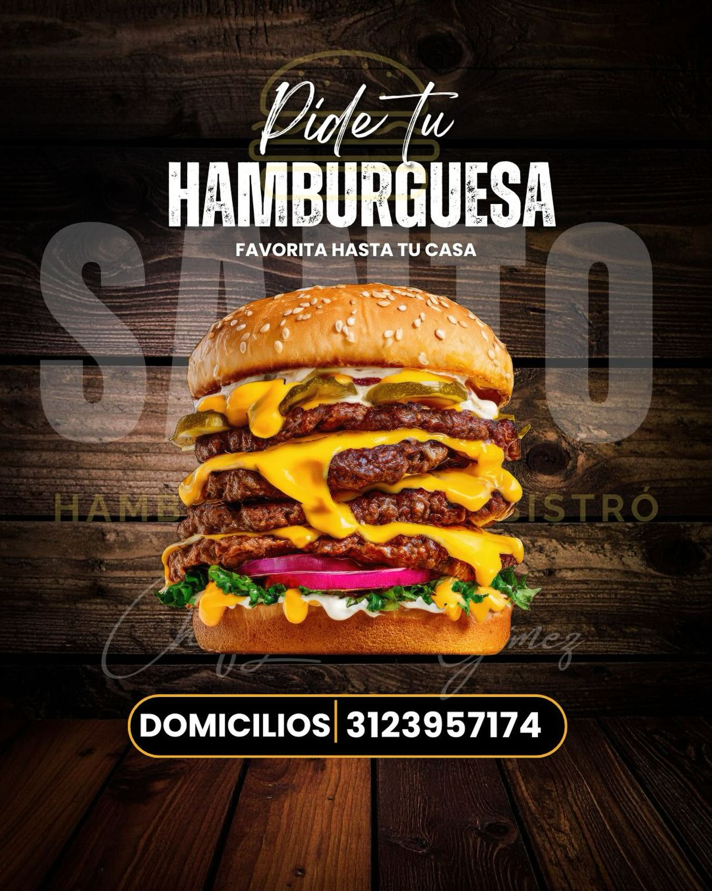

Restrepo · Meta ✦ Chef Luciano Gómez
SANTO
Hamburguesas & Bistró
Un pecado que se perdona. Carne a la parrilla, pan artesanal y recetas de autor en el corazón de Restrepo.
Conoce nuestra historia en voz del chef
Nuestra historia
Cocina con alma,
hecha en Restrepo
SANTO nació en el centro de Restrepo, Meta, con una idea sencilla: tratar la hamburguesa con el respeto de un plato de bistró. Carne seleccionada, pan artesanal, salsas de la casa y fuego de parrilla — sin atajos.
Detrás de cada plato está la mano del Chef Luciano Gómez, que combina técnica de cocina de autor con el sabor llanero de nuestra tierra. Aquí cada visita es un ritual: se comparte, se disfruta y se repite.
-
Parrilla y humoCarne sellada al fuego, jugosa por dentro
-
Pan artesanalHorneado para nuestras recetas
-
Sabor localIngredientes frescos de la región
Chef Luciano Gómez

Llegamos calienteDomicilios
Tu favorita,
hasta tu casa
¿Antojo santo? Te lo llevamos caliente y recién hecho a cualquier punto de Restrepo. Escríbenos por WhatsApp o llámanos y en minutos está en camino.
Recibimos pedidos todos los días de 5:00 pm a 10:00 pm
Visítanos
Estamos en el corazón
de Restrepo
Calle 7 # 5-24, Centro
Subiendo al parque principal, bajo el C.C. Plaza Roma
Restrepo, Meta
Lunes a domingo
5:00 pm – 10:00 pm